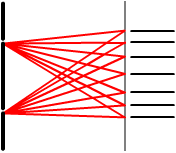
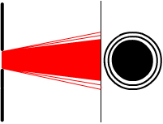
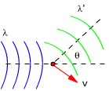
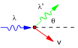

Preguntas malvadas
1Determina la energía, en eV, de un fotón de luz verde cuya longitud de onda es λ = 670 nm
Solución
$$\begin{aligned}&E=h\,f=h\,\frac{c}{\lambda}\\[8pt] &E=6{,}63\cdot10^{-34}\ \mathrm{J\,s}\ \frac{3\cdot10^{8}\ \mathrm{m/s}}{670\cdot10^{-9}\ \mathrm{m}}=2{,}97\cdot10^{-19}\ \mathrm{J}\\[8pt] &E=\frac{2{,}97\cdot10^{-19}\ \mathrm{J}}{1{,}6\cdot10^{-19}}\ \mathrm{eV}=1{,}85\ \mathrm{eV}\end{aligned}$$
2a)
¿Cuál es la menor energía posible de una radiación
luminosa de λ = 500 nm?
b) ¿Podría
existir una radiación de esta longitud de onda con una energía
de 5·10-19 J?
Dato h = 6,63·10-34
S.I
Solución
Una onda luminosa consiste en un conjunto de fotones cuya energía viene dada por E = h·f.
$$\begin{aligned}&E=h\,f=h\,\frac{c}{\lambda}\\[8pt] &E=6{,}63\cdot10^{-34}\ \mathrm{J\cdot s}\ \frac{3\cdot10^{8}\ \mathrm{m/s}}{500\cdot10^{-9}\ \mathrm{m}}=3{,}98\cdot10^{-19}\ \mathrm{J}\end{aligned}$$
La onda de menor energía posible tendrá un sólo fotón, por tanto su energía será: 3.98·10-19 J
La cantidad de fotones que tendría una onda de energía 5·10-19 J sería:
$$n=\frac{5\cdot10^{-19}\ \mathrm{J}}{3{,}98\cdot10^{-19}\ \mathrm{J}/\text{fotón}}=1{,}25\ \text{fotones}$$
No puede haber un número fraccionario de fotones
3La luz solar que llega a la Tierra tiene una intensidad de 1800 W/m2 ¿Cuántos fotones por metro cua-drado y por segundo representa esta radiación? Suponer una longitud de onda media para la luz solar de 550 nm. Dato: h = 6,63·10-34 J·s
Solución
Una intensidad de 1800 W/m2 significa que cada
segundo, en cada m2, la luz solar lleva 1800 J.
Esta energía es transportada por fotones cada uno de los cuales
lleva una energía E = h·f
Vamos a calcular la energía que transporta un fotón de la luz solar suponiendo esta monocromática con λ = 550·10-9 m:
$$E=h\,f=h\,\frac{c}{\lambda}=6{,}63\cdot10^{-34}\ \mathrm{J\cdot s}\ \frac{3\cdot10^{8}\ \mathrm{m/s}}{550\cdot10^{-9}\ \mathrm{m}}=3{,}62\cdot10^{-19}\ \mathrm{J}$$
La cantidad de fotones necesaria para transportar 1800 J será:
$$n=\frac{1800\ \mathrm{J}}{3{,}62\cdot10^{-19}\ \mathrm{J}}=4{,}97\cdot10^{21}$$
(Recuerda que las cantidades de cosas no tienen dimensiones)
4¿Cómo explicó Einstein la existencia de una longitud de onda crítica, λc, por encima de la cual los electrones no serían emitidos?
Solución
En el efecto fotoeléctrico un electrón absorbe un fotón y utiliza su energía (h·f) para escapar del metal (W0) y adquirir energía cinética:
$$h\,f=W_0+E_C\;\rightarrow\;\frac{h\,c}{\lambda}=W_0+E_C$$
Como el trabajo de extracción del metal (W0) es constante a medida que aumente λ disminuirá la energía cinética hasta anularse. Caso crítico:
$$\frac{h\,c}{\lambda_C}=W_0$$
Para valores de λ superiores a λc
no se cumplirá la expresión y cesará la emisión.
Dicho de otra forma los fotones de una radiación de longitud de
onda λ > λc no tienen energía
para sacar el electrón del metal
5Una superficie metálica emite electrones por efecto fotoeléctrico cuando sobre ella incide luz verde (500 nm), pero no lo hace cuando la luz es amarilla (600 nm) ¿Emitirá electrones cuando sobre ella incida luz azul (400 nm)? ¿Y si es roja (700 nm). Razona la respuesta
Solución
E = h·f = h·c /λ
La energía de los fotones es inversamente proporcional a su longitud de onda
Si una radiación de λ = 600 nm no produce fotoemisión tampoco lo hará una de λ = 700 nm cuyos fotones son menos energéticos
Si una radiación de λ = 500 nm produce fotoemisión también lo hará una de λ = 400 nm cuyos fotones son más energéticos (Expulsará electrones con más velocidad)
6¿Por qué el espectro del hidrógeno tiene muchas líneas si el átomo de hidrógeno tiene un sólo electrón?
Solución
Para ver el espectro del hidrógeno hay que aplicar una d.d.p elevada a un tubo que contiene gas hidrógeno a baja presión que son muchos millones de átomos.
En los átomos de hidrógeno, excitados por el campo eléctrico, el único electrón sube a un nivel más alto para caer después emitiendo un fotón (Línea espectral).
Ahora viene el truco: los electrones no suben todos al mismo nivel unos suben más y otros menos y los fotones que emiten al volver al nivel de partida tienen diferente energía (Distinta línea espectral) Cuantos más electrones hayan subido a un determinado nivel, más brillante será la línea espectral correspondiente
7La transición electrónica
del sodio que ocurre entre dos de sus niveles energéticos tiene
una energía E = 3,37·10-19 J. Supongamos que
se ilumina un átomo de sodio con luz monocrómática
cuya longitud de onda puede ser λ1 = 685,7 nm, λ2
= 642,2 nm o λ3 = 589,6 nm
¿Se conseguirá excitar un electrón desde el nivel
de menor energía al de mayor energía con alguna de estas
radiaciones? ¿Con cuál o cuáles de ellas? Razona
la respuesta
Solución
Lo que pregunta el problema es: ¿un electrón,
situado en un nivel bajo, puede capturar un fotón y uti-lizar su
energía para subir a un nivel más alto?
El truco del asunto está en que la energía del fotón
tiene que ser exactamente igual a la diferencia de energía entre
los niveles
Veamos la energía de cada uno de los fotones:
|
$$\begin{aligned}&E=h\,f=h\,\frac{c}{\lambda}\\[8pt] &E_1=6{,}63\cdot10^{-34}\ \mathrm{J\,s}\ \frac{3\cdot10^{8}\ \mathrm{m/s}}{685{,}7\cdot10^{-9}\ \mathrm{m}}=2{,}90\cdot10^{-19}\ \mathrm{J}\end{aligned}$$ Este fotón no tiene suficiente energía |
8¿Por qué los rayos ultravioleta (invisibles) al incidir sobre una pantalla fluorescente se transforman en azules y verdes?
Solución
 |
Los electrones de la pantalla absorben los fotones de la luz ultravioleta y suben a niveles más altos. A continuación estos electrones deberían volver a su nivel original emitiendo fotones iguales a los absorbidos. Pero el material de las pantallas fluorescentes tiene una estructura que permite al electrón caer a un nivel algo más bajo que el original perdiendo energía como calor. Y desde este nivel, el electrón cae al nivel original emitiendo un fotón de menor energía que el absorbido, por tanto de menor frecuencia y visible |
9a)
Comenta dos fenómenos físicos a favor de la teoría
ondulatoria de la luz
b) Comenta
dos fenómenos físicos a favor de la teoría corpuscular
de la luz
Solución
Interferencia en doble rendija
 |
Una onda luminosa plana llega a un plano opaco con dos rendijas muy finas a continuación del cual está colocada una pantalla. En la pantalla aparece una distribución de líneas luminosas y oscuras alternadas La distribución de líneas se explica como resultado de la interferencia de los rayos emitidos por los focos secundarios correspondientes a cada rendija. En la figura se han trazado los rayos que interfieren construc-tivamente |
Difracción por una rendija ancha
 |
Una onda luminosa plana llega a un plano opaco (Procedente de un foco lejano) con un orificio circular detrás del cual está colocada una pantalla. En la pantalla aparece un círculo luminoso y una distribución concéntrica de anillos luminosos y oscuros alternados La distribución de anillos se explica como resultado de la interferencia de los rayos emitidos por todos los focos secundarios que hay en el área de la rendija. |
Efecto Compton
Los rayos X que se envían a través de un gas de electrones libres, cambian su dirección de propaga-ción y aumentan su longitud de onda mientras que los electrones son impulsados con velocidad v
Admitiendo que la radiación estaba formada por fotones de energía E = h·f y momento lineal p = h·f/c se podía interpretar el efecto Compton como un choque oblicuo entre un fotón y un electrón
 |
El fotón choca con el electrón y le cede parte de su energía con lo que el elec-trón empieza a moverse. Al perder energía el fotón disminuye la frecuencia y el momento lineal |
Efecto fotoeléctrico
Iluminando un metal este emite electrones con una cierta energía cinética. Esta energía cinética no depende de la intensidad de la radiación sino de su frecuencia (A mayor frecuencia, más energía cinética)
Admitiendo que la radiación estaba formada por fotones de energía E = h·f se podía interpretar el efecto fotoeléctrico como la absorción de un fotón por parte de un electrón. La energía que gana el electrón se reparte en trabajo de extracción del metal y energía cinética:
h·f = W0 + EC
Evidentemente cuanto mayor sea la frecuencia de la radiación mayor será la energía cinética
10Enuncia el principio de indeterminación de Heisemberg ¿Cuál es su expresión matemática?
Solución
Cuando se midan a la vez la posición y el momento de una partícula, el producto de las indetermina-ciones en dichas medidas tendrá que ser mayor que h/(2π). Es decir: cuanto mejor se conozca la posición peor se conocerá el momento.
Esto matemáticamente se expresa así:
$$\Delta x\,\Delta p\geq\frac{h}{2\pi}$$
El principio de Heisemberg confirma
la dualidad onda-partícula y la imposibilidad de observarla simul-táneamente.
La posición define el aspecto corpuscular y el momento define el
aspecto ondulatorio
(λ = h/p), cuanto mejor se conozca un aspecto, peor se conocerá
el otro
11Describir el efecto fotoeléctrico y enumerar alguna de sus aplicaciones
Solución
Iluminando un metal este emite electrones con una cierta energía cinética. Esta energía cinética no depende de la intensidad de la radiación sino de su frecuencia (A mayor frecuencia, más energía cinética)
Se puede interpretar el efecto fotoeléctrico como la absorción de un fotón por parte de un electrón. La energía que gana el electrón se reparte en trabajo de extracción del metal y energía cinética:
h·f = W0 + EC
Evidentemente cuanto mayor sea la frecuencia de la radiación mayor será la energía cinética de los fotoelectrones
Las células fotoeléctricas se utilizan para
impedir que las puertas deslizantes de los ascensores se cierren cuando
se interpone un objeto entre ellas.
En el canto de uno de los paneles hay un foco de luz ultravioleta (Invisible)
y justo enfrente, en el canto del otro panel, hay una célula fotoeléctrica.
Mientras esta célula reciba luz permitirá que fun-cione
el motor de cierre.
12Define el trabajo de extracción de los electrones de un metal cuando recibe radiación electromag-nética. Explica de que magnitudes depende la energía máxima de los electrones emitidos en el efecto fotoeléctrico
Solución
El trabajo de extracción (W0) es la energía que necesita un electrón para poder escapar de un metal. Depende sólo de la naturaleza del metal
En el efecto fotoeléctrico un electrón absorbe un fotón y utiliza su energía (h·f) para escapar del metal (W0) y adquirir energía cinética:
$$h\,f=W_0+E_C\;\rightarrow\;E_C=h\,f-W_0$$
La energía cinética depende del trabajo de extracción (A menor trabajo de extracción mayor energía cinética) y de la frecuencia de la radiación (A mayor frecuencia mayor energía cinética).
Si la frecuencia es inferior a W0/h la energía
cinética será negativa lo que significa que no se produce
la emisión fotoeléctrica
13La energía de disociación
de la molécula de monóxido de carbono es 11 eV. ¿Es
posible disociar esta molécula utilizando la radiación de
632.8 nm procedente de un láser de He-Ne?
Dato: h = 6,6·10-34 J s
Solución
Lo que pregunta el problema es: ¿una molécula
puede capturar un fotón del láser y utilizar su energía
para disociarse?
El truco del asunto está en que la energía del fotón
tiene que ser exactamente igual a la energía de disociación
Veamos la energía del fotón:
$$\begin{aligned}&E=h\,f=h\,\frac{c}{\lambda}\\[8pt] &E=6{,}6\cdot10^{-34}\ \mathrm{J\,s}\ \frac{3\cdot10^{8}\ \mathrm{m/s}}{632{,}8\cdot10^{-9}\ \mathrm{m}}=3{,}12\cdot10^{-19}\ \mathrm{J}\\[8pt] &E=3{,}12\cdot10^{-19}\ \frac{1}{1{,}6\cdot10^{-19}}\ \mathrm{eV}=1{,}95\ \mathrm{eV}<11\ \mathrm{eV}\end{aligned}$$
El fotón no tiene energía suficiente para disociar la molécula y no será capturado
0La potencia mínima que
puede ser percibida por un ojo normal en luz amarilla de 589 nm es
3,1·10-16 W. Calcula el mínimo número
de fotones de esta longitud de onda que deben incidir por segundo en la
retina para producir la visión. Dato h = 6,63·10-34
J·s
Solución
Una potencia de 3.1·10-16 W significa que
cada segundo llega una energía de 3.1·10-16 J
Esta energía es transportada por fotones cada uno de los cuales
lleva una energía E = h·f.
Vamos a calcular la energía que transporta un fotón de la luz solar amarilla con λ = 589·10-9 m:
$$E=h\,f=h\,\frac{c}{\lambda}=6{,}63\cdot10^{-34}\ \mathrm{J\cdot s}\ \frac{3\cdot10^{8}\ \mathrm{m/s}}{589\cdot10^{-9}\ \mathrm{m}}=3{,}38\cdot10^{-19}\ \mathrm{J}$$
Los fotones necesarios para transportar una energía de 3.1·10-16 J serán:
$$n=\frac{3{,}1\cdot10^{-16}\ \mathrm{J}}{3{,}38\cdot10^{-19}\ \mathrm{J}}=917$$
Unos 900 fotones tienen que llegar a la vez al ojo para que este perciba luz amarilla
14Razonar la siguiente expresión: La indeterminación de la cantidad de movimiento de una partícula debe ser siempre mayor que h, según el Principio de Indeterminación de Heisemberg
Solución
Principio de Heisemberg:
$$\Delta x\,\Delta p\geq\frac{h}{2\pi}$$
La expresión dada es incorrecta. El principio de Heisemberg no establece el valor mínimo de la indeter-minación de una magnitud (p) sino el valor mínimo del producto de las indeterminaciones de dos magni-tudes (p, x) medidas a la vez. Es decir cuanto menos imprecisa sea la medida de una más imprecisa será la medida de la otra
Y ya puestos a criticar, el valor mínimo que establece Heisemberg no es h sino h/2π
15Explicar brevemente el efecto Compton y su relación con la naturaleza de la luz
Solución
 |
Los rayos X que se envían a través de un gas de electrones libres, cambian su dirección de propagación en un ángulo θ y aumentan su longitud de onda mientras que los electrones son impulsados con velocidad v Experimentalmente se obtiene la siguiente relación: $$\lambda'-\lambda=\frac{h}{m\,c}\,(1-\cos\theta)$$ |
No había manera de justificar la fórmula abordando el problema como la dispersión de una radiación luminosa por partículas materiales (Lo que ocurre en el cielo con la luz del Sol: la radiación azul es desviada en todas direcciones por las moléculas de nitrógeno)
Admitiendo que la radiación estaba formada por fotones de energía E = h·f y momento lineal p = h·f/c se podía interpretar el efecto Compton como un choque oblicuo entre un fotón y un electrón
 |
El fotón choca con el electrón y le cede parte de su energía con lo que el electrón empieza a moverse. Al perder energía el fotón disminuye la frecuencia y el momento lineal |
Aplicando las ecuaciones del choque oblicuo a esta situación se obtenía sin problemas la relación experimental de Compton.
Este resultado confirmó la hipòtesis del carácter corpuscular de las radiaciones luminosas
16Enuncia la hipótesis de Broglie y comenta algún resultado experimental que dé soporte a dicha hipótesis
Solución
Una partícula puede comportarse como una onda cuya longitud de onda vale:
$$\lambda=\frac{h}{p}=\frac{h}{m\,v}$$
Para que se muestre el aspecto ondulatorio de la partícula esta debe interaccionar con objetos mayo-res que su longitud de onda. Si lanzamos un chorro de electrones a alta velocidad contra una red cris-talina estos se difractarán igual que lo harían los rayos X.
El tamaño de los agujeros de una red cristalina es del orden de 10-10 m, por tanto la longitud de onda del electrón, para se comporte como una onda, tiene que ser 10-10 m como mucho. Para el electrón el cociente h/m es del orden de 103 m/(m/s) por tanto la velocidad tendrá que ser del orden de 107 m/s
0Un horno de microondas doméstico utiliza radiación de frecuencia 2.5·103 MHz. La frecuencia de la luz ultravioleta es 7.5·108 MHz ¿Cuántos fotones de microondas necesitamos para obtener la misma energía que con un solo fotón de luz ultravioleta?
Solución
Calculamos la energía un fotón ultravioleta (1) y de un fotón de microondas (2)
$$\begin{aligned}&\left.\begin{aligned}E_1&=h\,f_1\\[6pt] E_2&=h\,f_2\end{aligned}\right\}\xrightarrow{\;(1,2)\;}\frac{E_1}{E_2}=\frac{f_1}{f_2}\\[8pt] &\frac{E_1}{E_2}=\frac{7{,}5\cdot10^{8}\ \mathrm{MHz}}{2{,}5\cdot10^{3}\ \mathrm{MHz}}=300000\end{aligned}$$
La energía del fotón ultravioleta es 300000 veces mayor que la del fotón de microondas por tanto se necesitarán 300000 fotones de microondas para igualar la energía de un solo fotón ultravioleta
17Un metal emite electrones por efecto fotoeléctrico cuando se ilumina con luz azul pero no lo hace cuando la luz es amarilla. Sabiendo que la longitud de onda de la luz roja es mayor que la de la ama-rilla ¿Qué ocurrirá al iluminar el metal con luz roja?
Solución
Umbral para el efecto fotoeléctrico
$$h\,f_0=W_0\;\rightarrow\;\frac{h\,c}{\lambda_0}=W_0$$
Las radiaciones cuya longitud de onda sea mayor que λ0 no producirán fotoemisión
Si la luz amarilla no produce fotoemisión es porque su longitud de onda es mayor que λ0
La longitud de onda de la luz roja es aún mayor que la de la luz amarilla y por tanto mucho mayor que λ0 por lo que tampoco producirá fotoemisión
18Enuncia el principio de indeterminación de Heisemberg ¿Cuál es su expresión matemática?
Solución
Cuando se midan a la vez la posición y el momento de una partícula, el producto de las indetermina-ciones en dichas medidas tendrá que ser mayor que h/(2π). Es decir: cuanto mejor se conozca la posición peor se conocerá el momento.
Esto matemáticamente se expresa así:
$$\Delta x\,\Delta p\geq\frac{h}{2\pi}$$
El principio de Heisemberg confirma la dualidad onda-partícula
y la imposibilidad de observarla simul-táneamente. La posición
define el aspecto corpuscular y el momento define el aspecto ondulatorio
(λ = h/p), cuanto mejor se conozca un aspecto, peor se conocerá
el otro